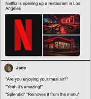

0


"At its peak in early 2014, Stack Overflow received more than 200,000 questions per month," notes the site DevClass.com. But in December they'd just 3,862 questions were asked — a 78 percent drop from the previous year.
But Stack Overflow's blog announced a beta of "a redesigned Stack Overflow" this week, noting that at July's WeAreDevelopers conference they'd "committed to pushing ourselves to experiment and evolve..."
Over the past year, on the public platform, we introduced new features, including AI Assist, support for open-ended questions, enhancements to Chat, launched Coding Challenges, created an MCP server [granted limited access to AI agents and tools], expanded access to voting and comments, and more.
However, these launches are not standalone features. We have also been rethinking our look and feel, how people engage with Stack Overflow, and how content is created and shared. These new features, along with the redesign, represent how we are bringing Stack Overflow's new vision to life and delivering value that developers cannot find elsewhere.
Our goal is to build the space for every technical conversation, centered on real human-to-human connection and powered by AI when it helps most. To support this, we are introducing a redesigned Stack Overflow to best reflect this direction... During the beta period, users can visit the beta site at beta.stackoverflow.com and share feedback as we build towards a new experience on Stack Overflow.
They've updated their library of reusable UI components (buttons, forms, etc.), and are promising "More ways to share knowledge and ask any technical question." ("Alongside looking for the single right answer to your question, you can now find and share experience-based insights and peer recommendations...")
They're launching all the planned features and functionality in April, when "More users will automatically redirect to the new site." (Starting in April users "can continue to toggle back to the classic site for a limited time.")
Read more of this story at Slashdot.
As the Mobile World Conference begins in Spain, Lenovo brought a new attachable accessory for their laptops — an AI agent. CNET reports:
The little circular module perches on the top of your Lenovo laptop display, attached via the magnetic Magic Bay on the rear. The module is home to an adorable animated companion called Tiko, who you can interact with via text or voice... [I]t can start and stop your music, open a web page for you or answer a question. You can also interact with it by using emoji. Give it a book emoji, for example, and it will pop on its glasses and sit reading with you while you work... The company wants to sell the Magic Bay accessory later this year — although it doesn't know exactly when, or how much it will cost.
It even comes with a timer (for working in Pomodoro-style intervals) — but Lenovo has also created another "concept" AI companion that CNET describes as "a kind of stationary tabletop robot, not dissimilar to the Pixar lamp, but with an orb for a head."
With a combination of cameras, microphones and projectors, the AI Workmate can undertake a variety of tasks, including helping you generate and display presentations or turn your written work or art into a digital asset... It's robotic head swivelled around and projected the slides onto the wall next to me.
Lenovo created a video to show this "next-generation AI work companion" — with animated eyes — "designed to transform how modern professionals interact with their workspace."
It bridges the physical and digital worlds — capturing handwritten notes, recognizing gestures, summarizing tasks, and proactively helping you stay ahead of your day. The moment you sit down, Lenovo AI Workmate greets you, surfaces priority tasks, and keeps your work organized without switching apps or losing context. From turning sketches into presentations to projecting information for instant collaboration, [it] brings on-device AI intelligence directly to your desk — secure, responsive, and always ready... It's not just software. It's a smarter way to work.
It looks like Lenovo once considered naming it "AI Sphere" (since that name still appears in its description on YouTube).
Lenovo also showed another "concept" laptop idea that PC Magazine called "futuristic":
The ThinkBook Modular AI PC looks like a traditional laptop at first glance, but a second, removable screen fastens onto the lid. You can swap that screen onto the keyboard deck (in place of the keyboard, which can then be used wirelessly), or use it alongside the laptop as a portable monitor, attached via an included cable.... While Lenovo is still working on this device, and it's very much in the concept phase, it feels like one of its best-thought-out prototypes, one likely to make it to store shelves at some point.
Another "concept" laptop is Lenovo's Yoga Book Pro 3D Concept, ofering directional backlight and eye-tracking technology for the illusion of 3D (playing slightly different images to each of your eyes). It offers gesture control for 3D models, two OLED displays, and some magical "snap-on pads" which, when laid on the display — make the GUI appear on the screen for a new control menu to "provide quick-access shortcuts for adjusting lighting, viewing angle, and tone".
Read more of this story at Slashdot.
If U.S. automakers turn their backs on electric vehicles, "their sales outside the U.S. will shrivel," warns Bloomberg. [Alternate URL.]
They're already falling behind on the technology, relying on a 100% U.S. tariff on Chinese EVs to keep surging rivals like BYD Co. at bay.... While the American automakers "mostly understand the challenge in front of them, they don't have full plans" to confront it [said Mark Wakefield, head of the global automotive practice at consultant AlixPartners]...
"Now is a great time for the V-8 engine," said Ryan Shaughnessy, the Mustang's brand manager. "We've done extensive customer research in multiple cities, looking at a variety of powertrains, and the V-8 is always the number-one choice." It isn't just customers. U.S. automakers have long been run by "car guys:" enthusiasts who live for the bone-shaking rumble of a big engine. For them, quiet and smooth EVs — even the absurdly fast ones — can't satisfy that craving. They're convinced many American car buyers share the same enthusiasm for what Shaughnessy described as "the sound and roar of the V-8."
Wall Street couldn't be happier with the new direction... Ford's fortunes are also on the rise, as it's predicting operating profits could grow by as much as 47% this year to $10 billion. Ford's stock has risen nearly 50% over the last 12 months. Under the previous environmental rules, automakers effectively had to sell zero-emission vehicles in growing numbers to offset their gas-guzzlers. When they fell short, they had to buy regulatory credits from EV companies such as Tesla Inc. or face penalties. GM spent $3.5 billion on credits from 2022 to the middle of 2025. Now, according to JPMorgan Chase & Co. analyst Ryan Brinkman, GM and Ford each have "billion dollar tailwinds"...
[T]he hangover from all that new horsepower could leave US automakers lagging their Chinese rivals who already build the world's most advanced — and lowest priced — electric cars. Indeed, there is much talk in Detroit about the competitive tsunami that will be unleashed on American automakers once Chinese car companies find a way to break through trade barriers now protecting the US market. [Ford Chief Executive Officer Jim] Farley even calls it an "existential threat"... "They're going to build as many V-8 engines and big trucks as they can get out the factory doors," said Sam Fiorani, vice president of vehicle forecasting for consultant Auto Forecast Solutions. "And as the rest of the world develops modern drivetrains, newer batteries and better electric vehicles, GM and Ford in particular are going to find themselves falling even further behind."
The article notes GM "continues to develop battery-powered vehicles, and CEO Mary Barra said the automaker would begin offering a 'handful' of hybrids soon," while Ford and Stellantis "have plans to launch extended-range electric vehicles, or EREVs, a new kind of plug-in hybrid with an internal combustion engine that recharges the battery as the vehicle drives down the road." But while automakers may be investing in future EV vehicles, they're also "leaning into the lucre that comes from selling millions of fossil-fuel vehicles in a rare moment of loosened regulation."
Read more of this story at Slashdot.
The Norwegian Consumer Council, a government funded organization advocating for consumer's rights, released a report on the trend of "enshittification" in digital consumer goods and services, suggesting ways consumers for consumers to resist. But they've also dramatized the problem with a funny four-minute video about the man whose calls for him to make things shitty for people.
"It's not just your imagination. Digital services are getting worse," the video concludes — before adding that "Luckily, it doesn't have to be this way." The Consumer Council's announcement recommends:
Stronger rights for consumers to control, adapt, repair, and alter their products and services,
Interoperability, data portability, and decentralisation as the norm, so the threshold for moving to different services becomes as low as possible,
Deterrent and vigorous enforcement of competition law, so that Big Tech companies are not allowed to indiscriminately acquire start-ups, competitors or otherwise steer the market to their advantage,
Better financing of initiatives to build, maintain or improve alternative digital services and infrastructure based on open source code and open protocols,
Reduce public sector dependence on big tech, to regain control and to contribute to a functioning market for service providers that respect fundamental rights,
Deterrent and consistent enforcement of other laws, including consumer and data protection law.
The Norwegian Consumer Council is also joining 58 organisations and experts in a letter asking the Norwegian government to rebalance power with enforcement resources and by prioritizing the procurement of services based on open source code. And "Our sister organisations are sending similar letters to their own governments in 12 countries."
They're also sending a second letter to the European Commission with 29 civil society organisations (including the EFF and Amnesty International) warning about the risks of deregulation and calling for reducing dependency on big tech.
Thanks to Slashdot reader DeanonymizedCoward for sharing the news.
Read more of this story at Slashdot.
"Podcasts have officially overtaken AM/FM talk radio as the more popular medium for spoken-word audio in the United States," reports TechCrunch, citing Edison Research's Share of Ear survey:
The researchers have tracked these statistics over the last decade, and almost always, the percentage of time people spent listening to podcasts increased, while their time with spoken radio broadcasts decreased. For the first time this year, podcasts eclipsed spoken-word radio with 40% of listening time, as opposed to 39% for radio...
We checked with Edison to see if these statistics include video podcasts, and they do. But the need to clarify that question points to the undeniable growing prevalence of video podcasts, hosted on platforms like Spotify and YouTube, which marks another key trend in podcasting... YouTube said that viewers watched 700 million hours of podcasts each month in 2025 on living room devices, like TVs, up from 400 million the previous year.
Read more of this story at Slashdot.
"Billions fewer birds are flying through North American skies than decades ago," reports the Associated Press, "and their population is shrinking ever faster, mostly due to a combination of intensive agriculture and warming temperatures, a new study found."
Nearly half of the 261 species studied showed big enough losses in numbers to be statistically significant and more than half of those declining are seeing their losses accelerate since 1987, according to Thursday's journal Science... The only consolation is that the birds that are shrinking in numbers the fastest are species — such as the European starling, American crow, grackle and house sparrow — with large enough populations that they aren't yet at risk of going extinct, said study lead author Francois Leroy, also an Ohio State ecologist...
When it came to population declines — not the acceleration — the scientists noticed bigger losses further south. When they did a deeper analysis they statistically connected those losses to warmer temperatures from human-caused climate change. "In regions where temperatures increase the most, we are seeing strongest declines in populations," [said study co-author Marta Jarzyna, an ecologist at Ohio State University]. "On the other hand, the acceleration of those declines, that's mostly driven by agricultural practices." The scientists found statistical correlations between speeded-up decline rates and high fertilizer use, high pesticide use and amount of cropland, Leroy said. He said they couldn't say any of those caused the acceleration of losses, but it indicates agriculture in general is a factor. "The stronger the agriculture, the faster we will lose birds," said Leroy...
McGill University wildlife biologist David Bird, who wasn't part of the study, said it was done well and that its conclusions made sense. With a growing human population, agriculture practices are intensified, more bird habitats are being converted to cropland, modern machinery often grind up nests and eggs and single crop plantings offer less possibilities for birds to find food and nests, said Bird, the editor of Birds of Canada. "The biggest impact of agricultural intensity though is our war on insects. Numerous recent studies have shown that insect populations in many places throughout the world, including the U.S., have crashed by well over 40 percent," Bird said in an email. "Many of the birds in this new study showing population declines depend heavily on insects for food."
A 2019 study of the same bird species by Cornell University conservation scientist Kenneth Rosenberg also found that North America had 3 billion fewer birds than in 1970, the article points out.
Read more of this story at Slashdot.
Slashdot reader darwinmac writes: The Document Foundation (TDF), the organization behind LibreOffice, has decided to bring back its LibreOffice Online project which been inactive since 2022. Collabora, a company that was a major contributor to the original LibreOffice Online, is not pleased with this development. After the original project went dormant, Collabora forked the code and created its own product, Collabora Online.
Collaboras Michael Meeks, who also sits on the TDF board, reacted to the TDFs decision by saying that a fully supported, free online version already exists in the form of Collabora Online, and that resurrecting a dead repository makes little sense when an active, open community around the online suite already exists.
For now, The Document Foundation plans to reopen the old repository for new contributions. The organization has issued a warning that the code is not ready for live deployment and users should wait until the development team confirms it is stable.
Read more of this story at Slashdot.
In a library in Florence, Italy, historian Ivan Malara noticed handwritten notes on a book printed in the 1500s — and recognized the handwriting as Galileo's. The finding "promises new insights into one of the most famous ideological transitions in the history of science," writes Science magazine — since the book Galileo annotated was a reprint of Ptolemy's second-century work arguing that the earth was the center of the universe.
Galileo's notes, perhaps written around 1590, or roughly 2 decades before his groundbreaking telescope observations of the Moon and Jupiter, reveal someone who both revered and critically dissected Ptolemy's work. And they imply, Malara argues, that Galileo ultimately broke with Ptolemy's cosmos because his mastery of the traditional paradigm's reasoning convinced him that a heliocentric [sun-centered] system would better fulfill Ptolemy's own mathematical logic.
Read more of this story at Slashdot.
An anonymous reader shared this report from the blogIt's FOSS:
Greg Kroah-Hartman has updated the projected end-of-life (EOL) dates for several active longterm support kernels via a commit. The provided reasoning? It was done "based on lots of discussions with different companies and groups and the other stable kernel maintainer." The other maintainer is Sasha Levin, who co-maintains these Linux kernel releases alongside Greg. Now, the updated support schedule for the currently active LTS kernels looks like this:
— Linux 6.6 now EOLs Dec 2027 (was Dec 2026), giving it a 4-year support window.
— Linux 6.12 now EOLs Dec 2028 (was Dec 2026), also a 4-year window.
— Linux 6.18 now EOLs Dec 2028 (was Dec 2027), at least 3 years of support.
Worth noting above is that Linux 5.10 and 5.15 are both hitting EOL this year in December, so if your distro is still running either of these, now is a good time to start thinking about a move.
Read more of this story at Slashdot.
In a 9,000-word expose, a writer for Harper's visited San Francisco's young entrepreneurs in September to mockingly profile "tech's new generation and the end of thinking."
There's Cluely founder Roy Lee. ("His grand contribution to the world was a piece of software that told people what to do.") And the Rationalist movement's Scott Alexander, who "would probably have a very easy time starting a suicide cult..."
Alexander's relationship with the AI industry is a strange one. "In theory, we think they're potentially destroying the world and are evil and we hate them," he told me. In practice, though, the entire industry is essentially an outgrowth of his blog's comment section... "Many of them were specifically thinking, I don't trust anybody else with superintelligence, so I'm going to create it and do it well." Somehow, a movement that believes AI is incredibly dangerous and needs to be pursued carefully ended up generating a breakneck artificial arms race.
There's a fascinating story about teenaged founder Eric Zhu (who only recently turned 18):
Clients wanted to take calls during work hours, so he would speak to them from his school bathroom. "I convinced my counselor that I had prostate issues... I would buy hall passes from drug dealers to get out of class, to have business meetings." Soon he was taking Zoom calls with a U.S. senator to discuss tech regulation... Next, he built his own venture-capital fund, managing $20 million. At one point cops raided the bathroom looking for drug dealers while Eric was busy talking with an investor. Eventually, the school got sick of Eric's misuse of the facilities and kicked him out. He moved to San Francisco.
Eric made all of this sound incredibly easy. You hang out in some Discord servers, make a few connections with the right people; next thing you know, you're a millionaire... Eric didn't think there was anything particularly special about himself. Why did he, unlike any of his classmates, start a $20 million VC fund? "I think I was just bored. Honestly, I was really bored." Did he think anyone could do what he did? "Yeah, I think anyone genuinely can."
The article concludes Silicon Valley's investors are rewarding young people with "agency". Although "As far as I could tell, being a highly agentic individual had less to do with actually doing things and more to do with constantly chasing attention online." Like X.com user Donald Boat, who successfully baited Sam Altman into buying him a gaming PC in "a brutally simplified miniature of the entire VC economy." (After which "People were giving him stuff for no reason except that Altman had already done it, and they didn't want to be left out of the trend.")
Shortly before I arrived at the Cheesecake Factory, [Donald Boat] texted to let me know that he'd been drinking all day, so when I met him I thought he was irretrievably wasted. In fact, it turned out, he was just like that all the time... He seemed to have a constant roster of projects on the go. He'd sent me occasional photos of his exploits. He went down to L.A. to see Oasis and ended up in a poker game with a group of weapons manufacturers. "I made a bunch of jokes about sending all their poker money to China," he said, "and they were not pleased...."
"I don't use that computer and I think video games are a waste of time. I spent all the money I made from going viral on Oasis tickets." As far as he was concerned, the fact that tech people were tripping over themselves to take part in his stunt just confirmed his generally low impression of them. "They have too much money and nothing going on..." Ever since his big viral moment, he'd been suddenly inundated with messages from startup drones who'd decided that his clout might be useful to them. One had offered to fly him out to the French Riviera.
The author's conclusion? "It did not seem like a good idea to me that some of the richest people in the world were no longer rewarding people for having any particular skills, but simply for having agency."
Read more of this story at Slashdot.
"Saturn and some of its 274 moons are pretty weird," writes Smithsonian magazine:
[Saturn moon] Titan has strangely few impact craters, Hyperion is tiny and misshapen, and Iapetus has a tilted orbit. What's more, planets tend to wobble along their rotational axes as they spin, like an off-kilter spinning top in the moments before it topples over. Formally called precession, scientists have long thought that Saturn's wobble rate should match Neptune's because they're probably gravitationally linked. However, data from NASA's Cassini spacecraft, which studied the ringed planet from 2004 to 2017, revealed that Saturn's precession rate is slightly speedier than Neptune's.
In 2022, some researchers suggested that the destruction of a hypothetical moon, called Chrysalis, around 160 million years ago may have knocked Saturn out of sync and formed the pieces that became the planet's rings. But this work implied that Chrysalis probably would've crashed into Titan, posing a major problem, study co-author Matija Äuk, an astronomer at the SETI Institute, tells New Scientist's Leah Crane. In that case, Chrysalis' debris couldn't have become the rings, he says.
So, Äuk and his colleagues used computer simulations to investigate what would happen if Chrysalis did smack into Titan. If that happened around 400 million years ago, they found, the crash would've wiped away Titan's craters and made its orbit more elliptical. The altered path may have slowly pushed the trajectories of other moons, which then scraped against one another and left chunks of ice and rock that now make up Saturn's rings. The timing seems to align with the rings' estimated age of roughly 100 million years. Additionally, one piece of kicked-up debris may have formed the weird moon Hyperion, which may have subsequently tilted the orbit of the moon Iapetus, according to the analysis. The scenario could also resolve Saturn's unexpected wobble, which is currently "a little bit too fast," Äuk tells Jacopo Prisco at CNN.
The study has been accepted for publication in the Planetary Science Journal, and is already available on the preprint server arXiv.
Read more of this story at Slashdot.
"Advanced AI models appear willing to deploy nuclear weapons without the same reservations humans have when put into simulated geopolitical crises," reports New Scientist:
Kenneth Payne at King's College London set three leading large language models — GPT-5.2, Claude Sonnet 4 and Gemini 3 Flash — against each other in simulated war games. The scenarios involved intense international standoffs, including border disputes, competition for scarce resources and existential threats to regime survival.
The AIs were given an escalation ladder, allowing them to choose actions ranging from diplomatic protests and complete surrender to full strategic nuclear war... In 95 per cent of the simulated games, at least one tactical nuclear weapon was deployed by the AI models.
"The nuclear taboo doesn't seem to be as powerful for machines [as] for humans," says Payne.
What's more, no model ever chose to fully accommodate an opponent or surrender, regardless of how badly they were losing. At best, the models opted to temporarily reduce their level of violence. They also made mistakes in the fog of war: accidents happened in 86 per cent of the conflicts, with an action escalating higher than the AI intended to, based on its reasoning...
OpenAI, Anthropic and Google, the companies behind the three AI models used in this study, didn't respond to New Scientist's request for comment.
The article includes this comment from Tong Zhao, a senior fellow in the Nuclear Policy Program at the Carnegie Endowment for Peace think tank. "It is possible the issue goes beyond the absence of emotion. More fundamentally, AI models may not understand 'stakes' as humans perceive them."
Thanks to long-time Slashdot reader Tufriast for sharing the article.
Read more of this story at Slashdot.
Slashdot reader JustAnotherOldGuy shared this report from the Guardian:
Chronic ocean heating is fuelling a "staggering and deeply concerning" loss of marine life, a study has found, with fish levels falling by 7.2% from as little as 0.1C of warming per decade. Researchers examined the year-to-year change of 33,000 populations in the northern hemisphere between 1993 and 2021, and isolated the effect of the decadal rate of seabed warming from short shifts such as marine heatwaves. They found the drop in biomass from chronic heating to be as high as 19.8% in a single year.
"To put it simply, the faster the ocean floor warms, the faster we lose fish," said Shahar Chaikin, a marine ecologist at the National Museum of Natural Sciences in Spain and the study's lead author. "A 7.2% decline for every tenth of a degree per decade might sound small," he added. "But compounded over time, across entire ocean basins, it represents a staggering and deeply concerning loss of marine life."
Read more of this story at Slashdot.
"Anthropic may have lost out on doing business with the US government," reports Engadget, "but it's gained enough popularity to earn the number one spot on the App Store's Top Free Apps leaderboard."
Anthropic's Claude AI assistant had already leaped to the #2 slot on Apple's chart by late Friday," CNBC reported Saturday:
The rise in popularity suggests that Anthropic is benefiting from its presence in news headlines, stemming from its refusal to have its models used for mass domestic surveillance or for fully autonomous weapons... OpenAI's ChatGPT sat at No. 1 on the App Store rankings on Saturday, while Google's Gemini was at No. 3... On Jan. 30, [Claude] was ranked No. 131 in the U.S., and it bounced between the top 20 and the top 50 for much of February, according to data from analytics company Sensor Tower... [And Friday night, for 85.3 million followers] pop singer Katy Perry posted a screenshot of Anthropic's Pro subscription for consumers, with a heart superimposed over it.
Sunday Engadget reported Anthropic's "very public spat" with the Pentagon "led to a wave of user support that finally allowed Claude to dethrone OpenAI's ChatGPT on the App Store as the most downloaded free app." .
Friday Anthropic posted "We are deeply grateful to our users, and to the industry peers, policymakers, veterans, and members of the public who have voiced their support in recent days. Thank you. "
Read more of this story at Slashdot.
Engadget reports:
In a lengthy post on Truth Social on February 27, President Trump ordered all federal agencies to "immediately cease all use of Anthropic's technology" following strong disagreements between the Department of Defense and the AI company. A few hours later, the U.S. conducted a major air attack on Iran with the help of Anthropic's AI tools, according to a report from The Wall Street Journal.
Even Trump's post noted there would be a six-month phase-out for Anthropic's technology (adding that Anthropic "better get their act together, and be helpful during this phase out period, or I will use the Full Power of the Presidency to make them comply, with major civil and criminal consequences to follow.")
Anthropic's Claude technology was also used by the U.S. military less than two months ago in its operation in Venezuela — reportedly making them the first AI developer known to be used in a classified U.S. War Department operation. The Wall Street Journal reported Anthropic's technology found its way into the mission through Anthropic's contract with Palintir.
Read more of this story at Slashdot.
Cristina Cueto / DatacenterDynamics : AWS plans to invest an additional €18B in Aragon, Spain, taking its total investment to €33.7B; its Aragon facilities have used 100% renewable energy since 2022 — Including facilities for the manufacture, assembly, storage, and recycling of servers
Zaheer Kachwala / Reuters : Nvidia says it plans to invest $2B each in photonic product makers Lumentum and Coherent to support the companies' R&D and manufacturing operations in the US — Nvidia (NVDA.O) will invest $2 billion each in photonic product makers Lumentum (LITE.O) and Coherent (COHR.N) …
Ben Thompson / Stratechery : Anthropic's concerns are legitimate, but its position is intolerable and misaligned with a reality where US foes are developing autonomous fighting capabilities — Just because you do not take an interest in politics doesn't mean politics won't take an interest in you. — ― Pericles
Will Sattelberg / 9to5Google : Qualcomm forms a “strategic coalition” to launch 6G in 2029 and unveils FastConnect 8800, an “AI-native” Wi-Fi 8-ready NIC that doubles peak speeds over Wi-Fi 7 — Qualcomm's taking Mobile World Congress by storm, with a collection of networking-centric announcements set …
Mayank Parmar / BleepingComputer : Anthropic says “a fix is being implemented” after elevated errors on claude.ai and Claude Code, starting at 11:49 UTC, and some API methods “are not working” — Claude appears to be having a major outage right now, with elevated errors reported across all platforms.
Terrence O'Brien / The Verge : Kalshi CEO Tarek Mansour says the company would void certain bets related to Iran's Ali Khamenei and claims it doesn't “list markets directly tied to death” — Users say rules barring ‘profiting from death’ are unclear. … In a statement on X, Kalshi CEO Tarek Mansour …
Max A. Cherney / Reuters : ASML CTO Marco Pieters says ASML plans to expand beyond EUV into advanced packaging, bonding, and connecting, and is building AI-based machine inspection tools — ASML Holding (ASML.AS) has ambitious plans to expand its line of chipmaking equipment into several new products to capture …
Bloomberg : The US-led Iran bombing campaign causes longer delivery times for Amazon, Shein, and others in the Middle East, one of the fastest-growing e-commerce markets — Major e-commerce platforms are warning of longer delivery times to the Middle East after the US-led bombing campaign …
Claude : Anthropic launches a tool to bring a user's preferences and context from other AI platforms to Claude via one copy-paste command, available on all paid plans — Bring your preferences and context from other AI providers to Claude. With one copy-paste, Claude updates its memory and picks up right where you left off.
New York Times : An unpublished draft of Changpeng Zhao's memoir, “Freedom of Money”, details secret negotiations in 2023 that led to his imprisonment and a run-in with ICE — In a draft of his memoir, Changpeng Zhao, the founder of Binance, laid out the secret negotiations that led to his imprisonment and a run-in with ICE.
Zheping Huang / Bloomberg : Shanghai-based MiniMax reports 2025 revenue up 159% YoY to $79M, above ~$71.4M est., and a $1.87B net loss, up from a ~$465.2M loss in 2024, after its IPO — MiniMax Group Inc. reported a better-than-expected 159% surge in revenue in 2025, reflecting the torrid growth that's drawn investors to China's leading OpenAI rivals.
Jordyn Holman / New York Times : Q&A with Kickstarter CEO Everette Taylor on modernizing the platform, attracting new creators, managing a fully remote, four-day-per-week workplace, and more — Everette Taylor took over Kickstarter at a low moment for the crowdfunding pioneer, which made its name with small projects …
Foreign Affairs : Chinese military procurement documents show the PLA's efforts to use AI to assist in drone piloting, cyberattacks, decision-making, and disinformation campaigns — The PLA's Tech Strategy Is Working — At China's Victory Day parade in September 2025, it was not the marching troops …
Matt Swider / The Shortcut : Qualcomm unveils the 3nm Snapdragon Wear Elite SoC for smartwatches, offering a Hexagon NPU that it says can run on-device AI models with up to 2B parameters — - ⌚ Qualcomm's first new wearable platform tier in 3 years debuted at MWC 2026 — 🧠 First-ever NPU in a wearable chip …
Zack Abrams / The Block : Vitalik Buterin outlines a two-part plan to overhaul Ethereum's execution layer with a binary state tree and eventually move beyond the Ethereum virtual machine — Quick Take — Ethereum co-founder Vitalik Buterin laid out a detailed case for two sweeping execution layer changes …